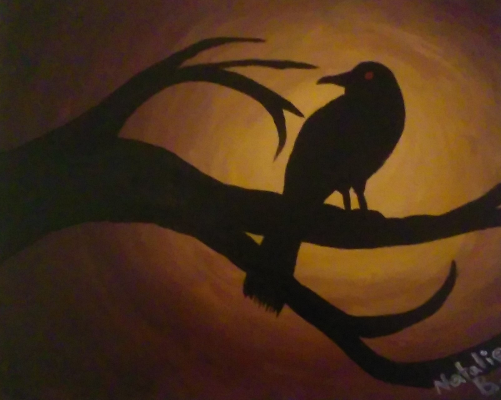
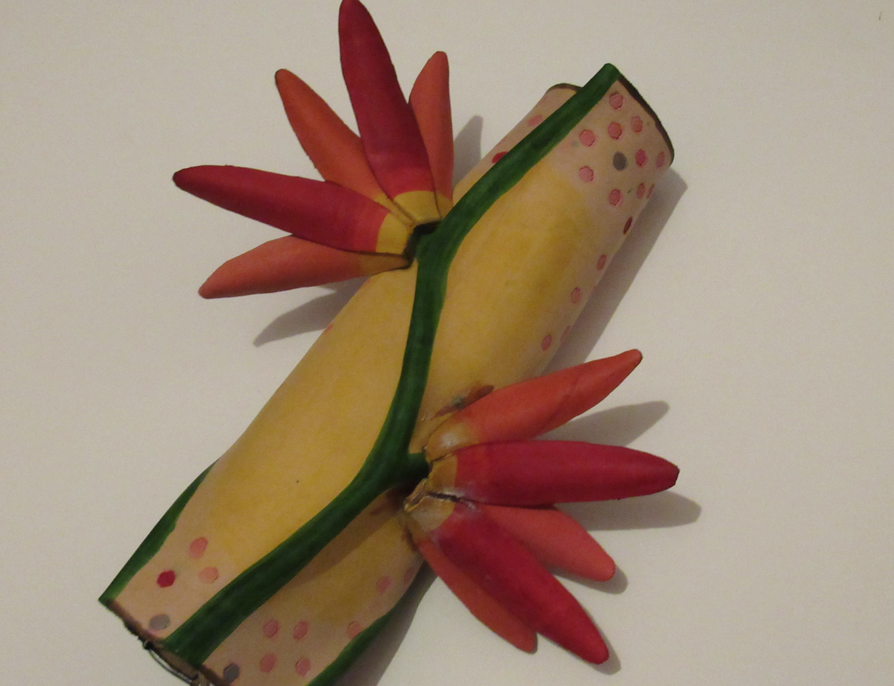
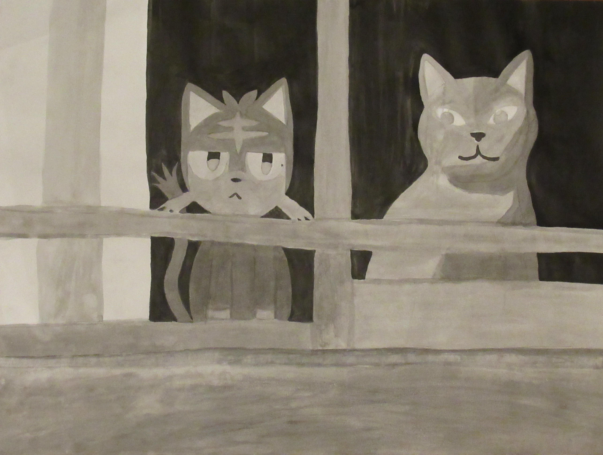
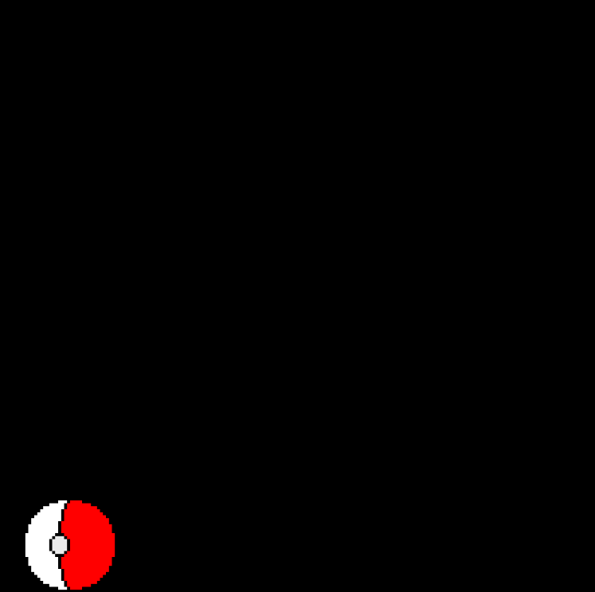
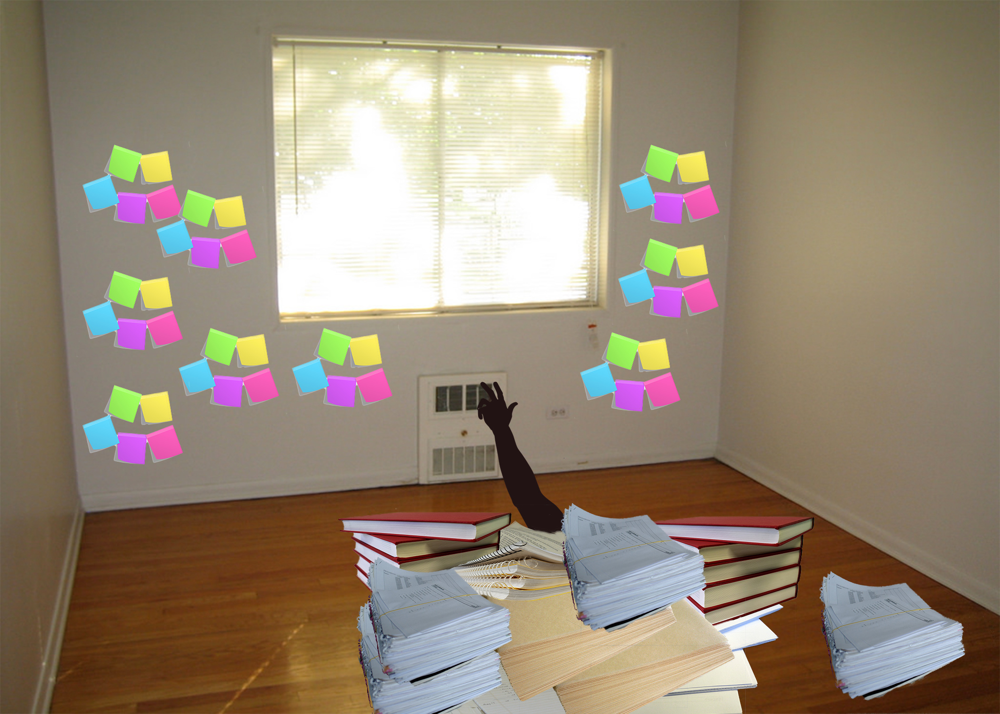
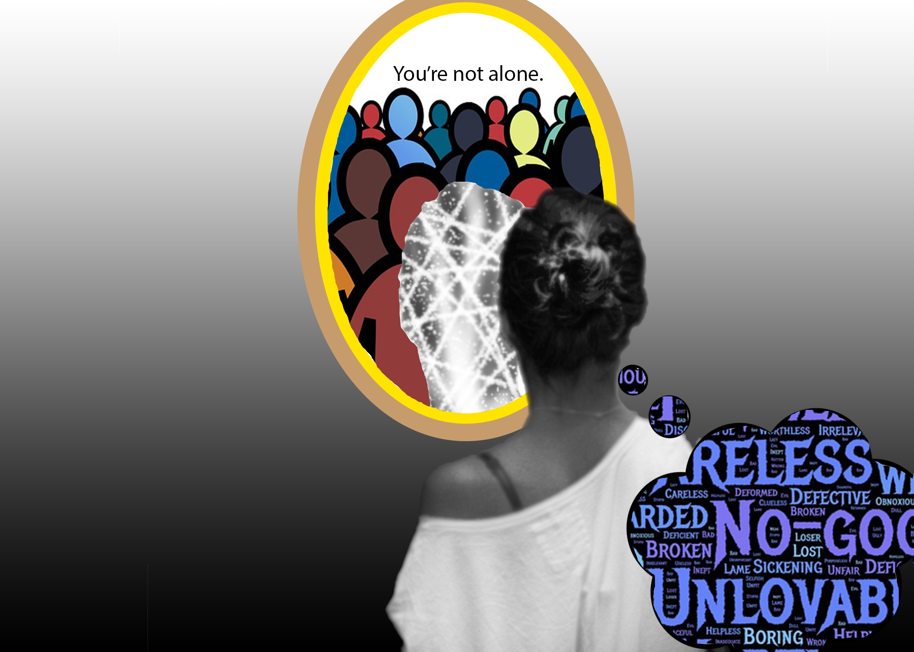

<!DOCTYPE html>
<html>

<head>
  <meta charset="utf-8">
  <title>Natalie Bellido</title>
  <link rel="stylesheet" type="text/css" href="main.css">
</head>

<body>
  <!-- <h1>Portfolio</h1>

    <div class="portfolio-item">
      
      <h3><em>Better Future</em>, 2017</h3>
      <p>It was my first time using Photoshop and exploring it's features. I was playing around with what I could do with an image I took of a location near my house. By Photoshopping animals and more greenery into the photo, I created a representation of
        my idea of a better future. Instead of the dark and gloomy vacant areas, we'll allow nature to have those spaces and transform them into beautiful views.</p>
    </div>

  <div class="portfolio-item">
    
    <h3><em>Brandon</em>, 2017</h3>
    <p>My friend, Brandon, had a birthday coming up and it was around Halloween. I wanted to make him something so I decided to paint something for him. He always wears black outfits and he tends to spend a lot of time alone so I felt that a crow would be the perfect symbol for him. The lone crow in this painting is as mysterious as he is and the night sky represents his tendency of staying up late.</p>
  </div>

  <div class="portfolio-item">
    
    <h3><em>From Ashes</em>, 2017</h3>
    <p>I decided to touch upon the topic of the environment for this piece.  I made this piece during the time when California was having a lot of fires and I wanted to make something to show how I felt about the issue. Although there's a lot of destruction of nature, it'll be able to grow back and be better than it was before. The leather forearm cover is dyed black, brown yellow, green, and pink. The small leather parts attached to it are supposed to be flower petals. They are dyed red, pink, and yellow. The dark back side (can't see it from this view of it unfortunately) of the piece represents burnt plants and the front is plants regrowing.</p>
  </div>

    <div class="portfolio-item">
      
      <h3><em>Litten and Kitten</em>, 2017</h3>
      <p>This piece was made using ink and water on drawing paper. In it is a creature from a video game and a cat. I wanted to make something representing my interests and the way I can relate things I see in real life to things I see in the video games I play. The example here is how cats remind me of a feline creature named Litten from Pokemon.</p>
    </div>

  <div class="portfolio-item">
    <iframe src="https://player.vimeo.com/video/263074451" width="640" height="480" frameborder="0" webkitallowfullscreen mozallowfullscreen allowfullscreen></iframe>
    <h3><em>Like a Fish out of Water</em>, 2018</h3>
    <p>I was exploring using visual representation, metaphors, and video effects in order to tell a story. This video is about my mother speaking about her experience coming from Mexico and immigrating to the United States. I used footage of me getting a
      fish from the pet store and bringing it home to symbolize my mother leaving her original country and going to a new country.</p>
  </div>

  <div class="portfolio-item">
    <a href="https://nataliebellido.github.io/as_time_passes_so_do_interests/">
  
</a>
    <h3><em>As Time Passes, so Do Interests</em>, 2018</h3>
    <p>Using Javascript, I was able to create this small piece of web art. My idea behind this was to show the way interest from childhood may change as time passes. When I was really young, my sister and I loved Pokemon. Over the years, her interest in
      the anime and games seemed to deminish, but mine stayed. This piece reflects this story the moment the mouse is clicked and held.</p>
  </div>

  <div class="portfolio-item">
    
    <h3><em>Student Life</em>, 2018</h3>
    <p>This image is a metaphor of how it feels to be a student. I made it using photoshop when I was feeling overwhelmed with everything I had to do. It was a nice way to express my emotions and how it feels like for me as a student. Like it's shown in the image, sometimes it just feels like I'm going to get lost in the piles of school work, projects, essays, tests, and books.</p>
  </div>

  <div class="portfolio-item">
    <iframe src="https://player.vimeo.com/video/263482389" width="640" height="480" frameborder="0" webkitallowfullscreen mozallowfullscreen allowfullscreen></iframe>
    <h3><em>Take a Break from the Screen</em>, 2018</h3>
    <p>My messange in making this video is that our daily lives are filled with technology and the internet. I believe that those things are great, but that it's important to step away from them. The idea was sparked after struggling to have a conversation with a friend who was busy texting while we were talking.</p>
  </div>

  <div class="portfolio-item">
    
    <h3><em>Not Alone</em>, 2018</h3>
    <p>Instead of looking into the mirror to find your flaws, this mirror reminds the person looking into it that they aren't alone when they are feeling down. I made this piece after a talk I had with a friend who suffers from depression. I wanted to make something she could look at whenever I was unable to talk to her about how she was feeling. The message is to remind her that she isn't alone in how she feels and how there are people she can go to for support.</p>
  </div>

  <div class="portfolio-item">
    <iframe width="560" height="315" src="https://www.youtube.com/embed/ScHO6_2RzyY" frameborder="0" allow="autoplay; encrypted-media" allowfullscreen></iframe>
    <h3><em>Put Yourself in my Shoes</em>, 2018</h3>
    <p>My intent behind making this video is to respond to all the toxic behavior in a game called Overwatch and to explain the way I've been feeling after my time playing this game.</p>
  </div> -->

</body>

</html>
